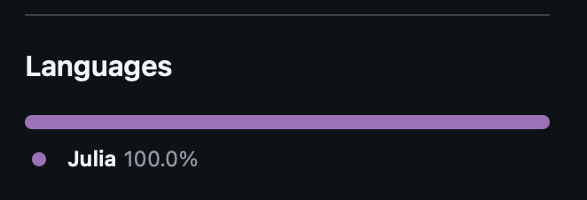
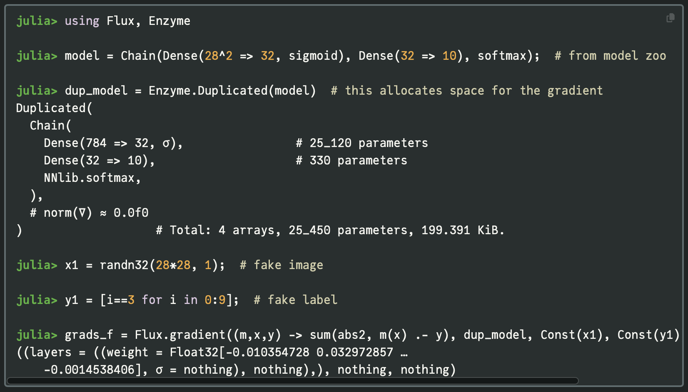
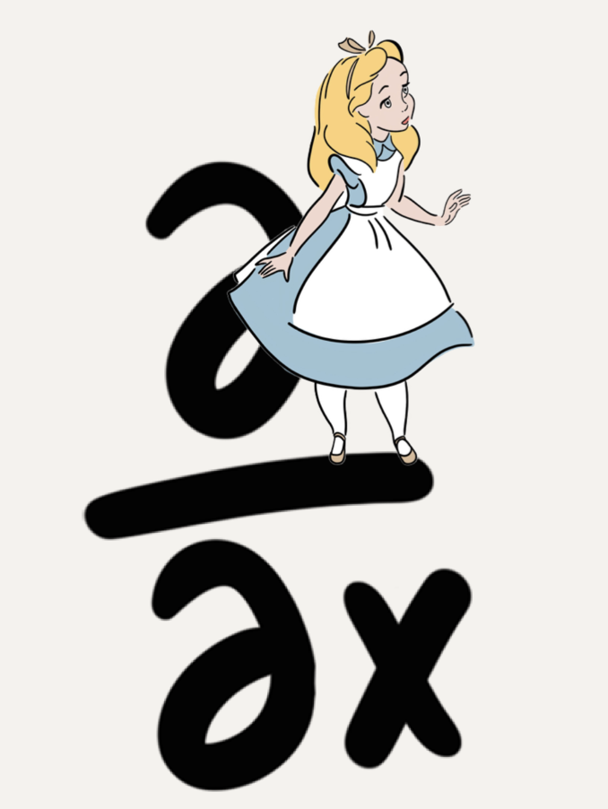

using Distributions
priors = (
α_prior = Normal(0, 3),
β_prior = Normal(0, 3),
σ_prior = Exponential(1)
)(α_prior = Normal{Float64}(μ=0.0, σ=3.0), β_prior = Normal{Float64}(μ=0.0, σ=3.0), σ_prior = Exponential{Float64}(θ=1.0))performant gradients on demand, courtesy of Julia
Domenic Di Francesco
September 9, 2025
Gradients guide us through high-dimensional parameter space to draw samples from posterior distributions, take steps towards loss minimising parameter values, identify model vulnerabilities using adversarial methods, and more. One (of many) fun features about the Julia programming language is it’s unique approach to autodiff. However, I personally found some documentation a little difficult to follow, so this is intended to be a practical guide, with a couple of example use cases.
Soooo much of computational statistics and machine learning is built on automatic (algorithmic) differentiation (AD). Dig into literature on Bayesian inference, or deep learning, and you will find parameters being nudged in a direction informed by a gradient. I’m sometimes suprised at the extent of the ‘gradient-based’ monopoly in scientific computing, but I don’t mean to trivialise! …getting gradients of complex functions, very quickly and without error, is a powerful tool and it’s great that people are able to leverage this.
AD achieves this by “the relentless application of the chain rule”, as I vaguely recall one of the Stan developers saying. Large functions are differentiated piece by piece (for which look-up rules can be applied), and the results are stitched together.
\[ \frac{\partial \mathcal{L}}{\partial x_i} = \frac{\partial \mathcal{L}}{\partial x_n} \times \frac{\partial x_n}{\partial x_{n-1}} \times \cdots \times \frac{\partial x_{i+1}}{\partial x_i} \]
Julia ♥️💚💜Perhaps my favourite feature of Julia is it’s inter-operability. Look at a GitHub repo for a Julia package and you will generally find the following:

Julia is so performant, that it’s libraries for scientific computing will work with normal variables - without needing to package up their own types. So solvers from DifferentialEquations, or neural networks defined in Flux can be immediately combined with the Julia probabilistic programming language, Turing.
If a new framework emerges in Python, an entirely new ecosystem may need to be developed to prop it up. This may involve duplicating existing but now incompatible functionality - think of JAX needing to implement it’s own NumPy module. …whereas if you write a new Julia library, it could offer a vast range of applications as it is combined with other packages, which feels like potential for a multiplicative, rather than additive, impact.
Here I am, impressed that the interoperability of the Copulas package:
— Domenic Denicola (@Domenic_DF) January 31, 2023
JuliaML frameworks in Python require you to work in their own syntax, with theit specific types, and use their own in-built AD methods. Locking into a framework is not ideal, as you are limited to the methods they support and you need to juggle types of inputs and outputs.
Conversely, Julia works the other way around. You write your code, using whichever libraries, functions and types you want, and then you choose an AD library to get you the gradients you need.
Why does this feel so powerful? It’s the promise of gradient-based methods for your scientific problem, rather than a walled-off machine learning model. You can point an AD engine at the aspect of your analysis that you are interested in for more bespoke interrogation or optimisation.
I recently completed a project, which had an element of adversarial AI (counterfactual analysis and saliency maps), which I wrote in JAX, mainly as an excuse to learn JAX. I used their NNX module for neural networks, and found this to be unexpectedly restrictive. I wasn’t able to run analysis that required gradients of outputs w.r.t. inputs, as I hit NNX errors/limitations that I wasn’t able to resolve. I ended up re-writing everything in Julia.
Once upon a time there was Zygote: an AD library that powered ML in Julia. A great achievement, but limitations began to emerge. Because it operates on your high-level Julia code, it can struggle with certain features, similar to the so-called “sharp bits” of JAX …though I believe those limitations emerge for different reasons. I have also heard Zygote being described as “too permissive”“: it’s attempts to differentiate anything you throw at it can open the door to unidentified errors.
And then came Enzyme: an AD library that works at the LLVM level (your code is compiled first, and then the gradients are computed). This led to improvements in both performance and flexibility - we can now differentiate through mutation and control flow. This more resilient library has a steeper learning curve (imo), but (also imo) requiring more explicit instructions ends up making things clearer.
I hope the below examples will help get you started.
How about computing the gradients we need for Hamiltonian Monte Carlo sampling. For a linear regression model, with inputs, \(X\) and outputs, \(y\):
\[ y \sim N(\alpha + \beta X, \sigma) \]
with priors:
\[ \alpha \sim N(0, 3) \]
\[ \beta \sim N(0, 3) \]
\[ \sigma \sim \text{Exponential}(1) \]
Let’s put these in a tuple:
using Distributions
priors = (
α_prior = Normal(0, 3),
β_prior = Normal(0, 3),
σ_prior = Exponential(1)
)(α_prior = Normal{Float64}(μ=0.0, σ=3.0), β_prior = Normal{Float64}(μ=0.0, σ=3.0), σ_prior = Exponential{Float64}(θ=1.0))For numerical stability reasons MCMC typically works in negative log space, so the below function finds the unnormalised negative log posterior for our model. This could of course be sped-up, but I’ve tried to keep it friendly 😊
using Random
function neg_log_posterior(params::NamedTuple, priors::NamedTuple,
x::Vector, y::Vector)
α = params.α; β = params.β; σ = params.σ
# mean of likelihood
μ_pred = α .+ x * β
# increment the negative log likelihood for all observations
neg_log_lik = 0.0
for i in 1:length(y)
neg_log_lik += -logpdf(Normal(μ_pred[i], σ), y[i])
end
# ...and for the priors
neg_log_prior_α = -logpdf(priors.α_prior, α)
neg_log_prior_β = -logpdf(priors.β_prior, β)
neg_log_prior_σ = -logpdf(priors.σ_prior, σ)
# summing in log space is equivalent to multiplying priors and likelihoods 😉
return neg_log_lik + neg_log_prior_α + neg_log_prior_β + neg_log_prior_σ
endneg_log_posterior (generic function with 1 method)To use this function, we need to define some inputs. Here, I’m just simulating some data, using “true” parameter values:
We can use Enzyme to get the gradients of the negative log posterior w.r.t. the model parameters - as required by Hamiltonian Monte Carlo.
# where do i want gradients?
params_init = (
α = rand(prng, priors.α_prior),
β = rand(prng, priors.β_prior),
σ = rand(prng, priors.σ_prior)
)(α = -6.290988779313054, β = 3.9183834605694834, σ = 1.6155587713748865)I am giving the gradient() function three arguments:
the mode/direction to apply AD, Reverse. Each pass of a reverse-mode AD computes gradients of all inputs w.r.t. a single output (as a vector-Jacobian product). In Forward mode, each pass computes gradients of a single input w.r.t. all outputs (as a Jacobian-vector product). Consequently, there are efficiency trade-offs associated with this selection, depending on the number of inputs and outputs of…
…the function we are differentiating, params -> neg_log_posterior(params, priors, x, y). Here, an anonymous function that takes params as input and returns the negative log posterior, using neg_log_posterior(), which we defined above.
the point at which we want gradients, params_init. This is the current location of the Markov chain. In the first instance we need an initial guess, for which we have drawn from the priors.
using Enzyme
# computing the gradients
grads = Enzyme.gradient(
Reverse,
params -> neg_log_posterior(params, priors, x, y),
params_init
)((α = -54.13440425830732, β = 25.990919631591435, σ = -323.2246379556173),)We can then use these gradients to update the momentum of our Hamiltonian ‘particles’, generating proposals guided by the geometry of the posterior distribution. Unlike random walks or Gibbs samplers, this generation of samplers remain efficient in high dimensions 🥳
I defined a simple, densely connected neural network without anything clever (no layer normalisations, recurrent connections or attention mechanisms), sometimes referred to as a multi-layer perceptron (MLP).
I’ll spare you this set-up code here as we are focussing on autodiff, but you can find the full code on GitHub.
Instead, let’s look at my training function. Notice that I am now using a different function, Enzyme.autodiff() for backpropagation. It has more arguments:
set_runtime_activity(Reverse). Similar to gradient(), but here we are specifying that we want to use reverse-mode AD, with runtime activity analysis. As a rule of 👍, I start with regular Reverse mode AD. If I get compilation errors about, for instance, type inference or broadcasting, then I add set_runtime_activity().(net, funs, inputs, targets) -> find_loss(net, funs, inputs, targets). Here, an anonymous function that takes the neural network, its functions, inputs and targets as arguments, and returns the loss.Active. we need to make the output to the loss function active, because it is the starting point of the chain rule.Active, Const(), or Duplicated(). This is where things get more explicit. We need to tell Enzyme which arguments we want gradients for (Active), and which we don’t (Const) - the derivative of a constant is zero. Finally, we also want gradients for Duplicated variables, but they could be large. So we create a shadow copy of the neural network, nn_shadow, which we use to accumulate gradients in-place (without allocating new memory each time!)function train(nn::neural_network, nn_funs::neural_network_funs,
a::Array{Float64}, y::Array{Float64};
a_test::Array{Float64} = a, y_test::Array{Float64} = y,
n_epochs::Int = 10, η::Float64 = 0.01)
@assert n_epochs > 0 "n_epochs must be greater than 0"
training_df = DataFrame(epoch = Int[], loss = Float64[], test_loss = Float64[])
for i in 1:n_epochs
# initiate our memory-saving shadow
∇nn = Enzyme.make_zero(nn)
# find ∂ℒ/∂θ
Enzyme.autodiff(
set_runtime_activity(Reverse),
(net, funs, inputs, targets) -> find_loss(net, funs, inputs, targets)[1],
Active,
Duplicated(nn, ∇nn),
Const(nn_funs),
Const(a),
Const(y)
)
# nudge all weights and biases towards a lower loss, using learning rate, η
for j = 1:length(nn.Ws)
nn.Ws[j] -= η * ∇nn.Ws[j]
nn.bs[j] -= η * ∇nn.bs[j]
end
# record losses
append!(training_df,
DataFrame(epoch = i,
loss = find_loss(nn, nn_funs, a, y)[1],
test_loss = find_loss(nn, nn_funs, a_test, y_test)[1]))
end
return nn, training_df
endEnzyme.make_zero(nn) creates a structural copy of nn with the same type (neural_network), field names (Ws, bs), and dimensions …but with all numerical values set to zero. This memory-saving trick is important for large vectors of parameters, as we will generally have in deep learning.
The example applications that I selected are already very well equipped with sophisticated Julia libraries. If you are interested in probabilistic modelling in Julia, use Turing, if you are interested in deep learning, use Flux. Both are Enzyme compatible, but the later has specific guidance on how to set this up, using the Duplicated method that we used above:

The Julia autodiff ecosystem, which is more vast than the examples covered in this blog post, link
A summary of the key trade-offs accross various autodiff methods, link
Professor Simone Scardapone’s book, “Alice’s adventures in a differential wonderland” link.
“As the name differentiable implies, gradients play a pivotal role”

JuliaCon talk on Julia’s unique approach to autodiff:
@online{di_francesco2025,
author = {Di Francesco, Domenic},
title = {Diff All the Things},
date = {2025-09-09},
url = {https://allyourbayes.com/posts/gradients/},
langid = {en}
}